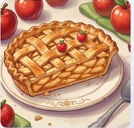

Uma torta clássica, doce e aconchegante, perfeita como a da Branca de Neve ✨
Corte as maçãs em fatias e misture com açúcar e canela. Coloque o recheio sobre a massa, cubra com tiras decorativas e pincele gema. Leve ao forno preaquecido a 180°C por cerca de 40 minutos até dourar ✨
❤️ Adicionar aos favoritos